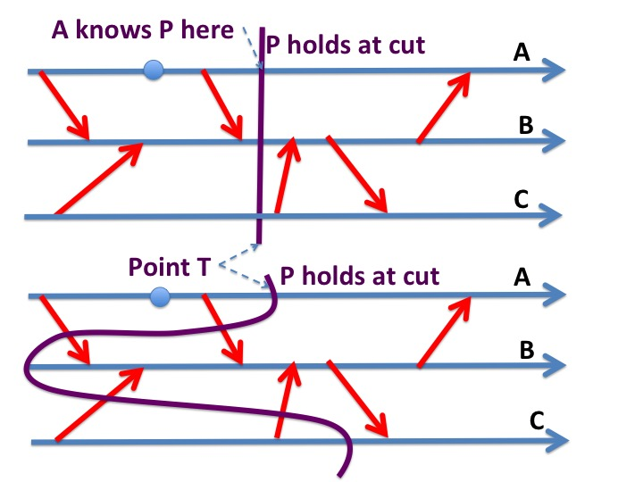
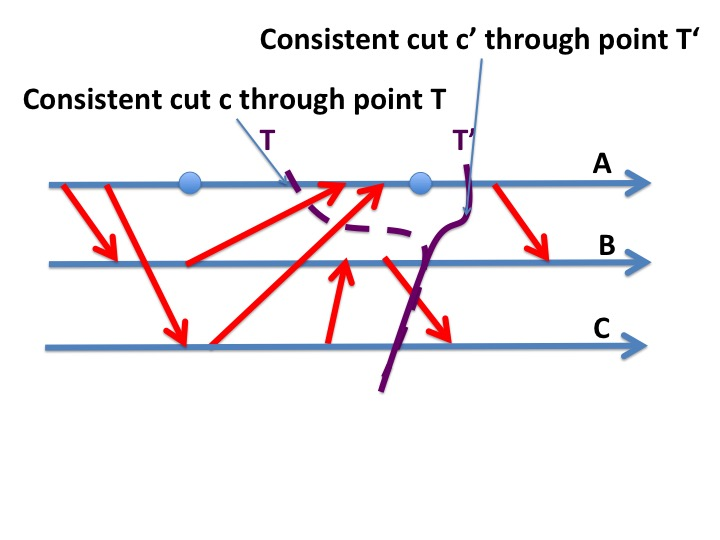
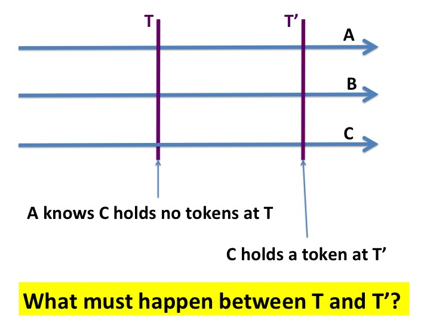
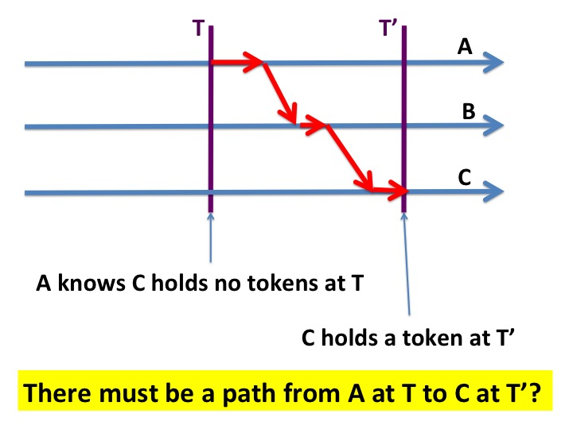
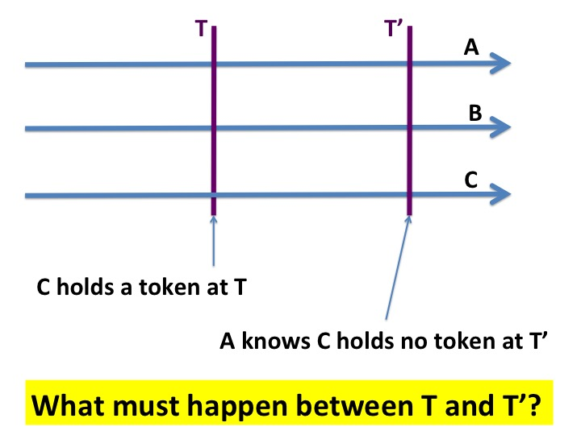
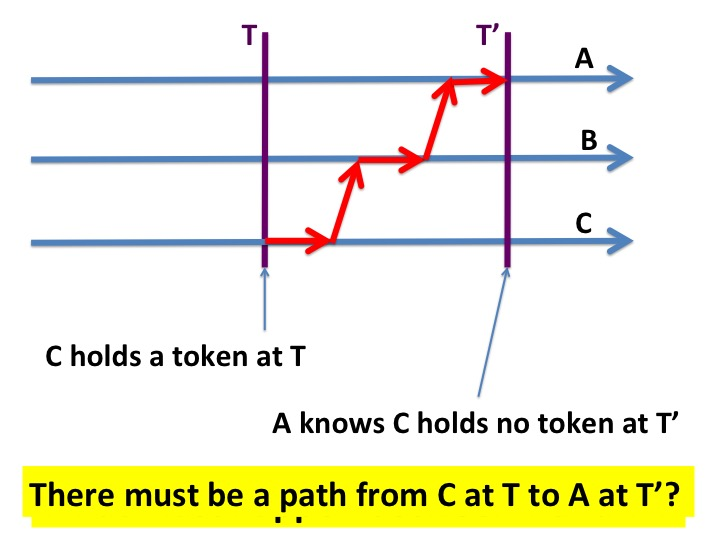

This module gives a formal definition for the frequently used informal
phrase: "An agent knows something about other agents and and
channels."
Key Ideas
We sometimes use anthropmorphic arguments in reasoning about
systems --- we invest digital
agents with human characteristics. For example, a programmer may
say "an agent knows that another agent is idle." Endowing software with
human capabilities can be dangerous when terms are ambiguous.
In this module we define a predicate "agent \(x\)
knows \(P\)" where \(P\) is a predicate on states of a system.
In later modules, we will use this definition to discuss
algorithms.
This module presents theorems about what agents know. The proofs
of these theorems follow from the definition of
consistent
cuts .
What an Agent Knows
Let \(x\) be an agent, \(P\) a predicate on system states, and
\(Q\) a predicate on states of \(x\).
\(P\) can be a global predicate, i.e., a predicate on
states of all agents and channels. \(Q\) is a local
predicate of \(x\) because it is a predicate only on the states of
agent \(x\) and is independent of other agents and only channels.
Let \(init\) be the predicate that defines the initial condition of
the system.
We
define the predicate "\(x\) knows \(P\)" as follows.
\(x\) knows \(P\) is the weakest local predicate \(Q\) of
\(x\) such that:
\(x\) knows \(P\) holds in a local state \(s_{x}\) of agent \(x\)
exactly when \(P\) holds in all states of all trajectories
(that start from an initial state) when the
local state of agent \(x\) is \(s_{x}\).
Explanation
For any predicate \(R\):
\(
[init \; \Rightarrow \; always(R)]
\)
means that \(R\) holds in every state of every trajectory that starts
in an initial state. So,
means that in \([Q \Rightarrow P]\) holds in every state of every
trajectory that starts in an initial state.
So, if local predicate \(Q\) of agent \(x\) holds in any
state of any trajectory that starts from an initial state then global predicate \(P\)
also holds in that state.
Example
A system consisting of agents \(0, \ldots, N\) has two indivisible
tokens which are not created or destroyed.
"Agent \(0\) knows no other agent holds a token" is a predicate on the states of agent
\(0\); this predicate holds for a local state \(s_{0}\) of agent \(0\)
if and only if no other agent holds a token when agent \(0\) is in
state \(s_{0}\).
So, "agent \(0\) knows P" holds exactly when agent \(0\)
holds both tokens.
Example
This example deals with a system consisting of two agents \(x\) and
\(y\) and channels in both directions between the agents. The system
has a single indivisible token that is not created or destroyed.
Let
\(P\) be the predicate: "\(y\) does not hold the token."
Agent \(x\) knows \(P\) when \(x\) holds the token.
\(\neg\) (\(x\) knows \(P\)) is a predicate too, and sometimes
programmers refer to this predicate as "\(x\) does not know \(P\)."
Example
In the previous example, let \(Q\) be the predicate: "\(y\) holds the token."
In what local states of agent \(x\) does \(x\) know that "\(y\) holds the token?"
There are no local states of agent \(x\) in which \(x\) knows that
"\(y\) holds the token." Even when \(x\) does not hold the token,
\(x\) does not know that \(y\) holds the token because
the token could be in a channel.
When \(x\) does not hold the token, \(x\) does not know that \(y\) holds
the token and \(x\) does not know that \(y\) does not hold the token.
"NOT(x knows Q)" AND "NOT(x knows NOT Q)"
is a predicate which holds in the
state which \(x\) does not hold the token.
Notation
"\(x\) knows \(P\) at a point \(T\)" in a timeline means that at
point \(T\) agent \(x\) is in a state where the predicate "\(x\)
knows \(P\)" holds.
Theorem: Knowledge and Consistent Cuts
Let \(P\) be a predicate on the states of a system.
If \(x\) knows \(P\) at a point \(T\) in \(x\)'s timeline
then \(P\) holds in every consistent cut through that point.
Proof
The states corresponding to all consistent cuts that pass through the same
point on \(x\)'s timeline have the same common value for \(x\)'s local
state.
Example
>
Fig. 2. Agent A knows P in all consistent cuts that cross
point T
The top figure in both diagrams above show a time T at which agent A knows
that P holds. This implies that P holds in all consistent cuts through
point T. The lower figures in the diagrams show consistent cuts which
passes point T on A's timeline; the theorem says that P holds for the
state at these cuts too.
Theorem: A Silent Agent retains
Knowledge
An agent that sends no information between a point \(T\) and a later
point \(T'\) retains all the knowledge it has at \(T\) at \(T'\).
Let \(x\) be an agent in a system, and let \(P\) be a
predicate on a subsystem that does not include \(x\).
Let \(T\) and \(T'\) be points on \(x\)'s timeline with \(T < T'\). If
\(x\) knows \(P\) at point \(T\) and \(x\) sends no messages in the
interval \([T, T']\) then \(x\) knows \(P\) at \(T'\).
Proof
Let \(c'\) be any consistent cut through point \(T'\) on \(x\)'s
timeline. We will prove that \(P\) holds for the state at cut \(c'\).
Let \(c\) be the
cut that is identical to \(c'\) except that it passes through point \(T\) on
\(x\)'s timeline. \(c\) is consistent because there are no
outgoing edges from \(x\)'s timeline between cuts \(c\) and
\(c'\).
Because \(x\) knows \(P\) at \(T\), \(P\) holds at \(c\). Since \(c\) and \(c'\)
are identical except for the intersection with \(x\)'s timeline,
it follows that \(P\) holds \(c'\).
Example
>
Fig. 3. Illustration of Proof of Silent Agents
Consequence of the Theorem
An agent doesn't lose knowledge by getting information from other
agents.
An agent can only lose knowledge by sending information to
other agents. This seems counterintuitive; we'll look at the reasoning
underlying this in a later theorem.
Theorem: Agents who don't listen remain
Ignorant
An agent that receives no information between a point \(T\) and a later
point \(T'\) learns no new knowledge between \(T\) and \(T'\).
Let \(x\) be an agent in a system, and let \(P\) be a
predicate on a subsystem that does not include \(x\).
Let \(T\) and \(T'\) be points on \(x\)'s timeline with \(T < T'\). If
\(x\) knows \(P\) at point \(T'\) and \(x\) received no messages in the
interval \([T, T']\) then \(x\) knows \(P\) at \(T\).
The proof has exactly the same structure as the proof of the
previous theorem.
Consequence of the Theorem
\(x\) didn't learn anything in the interval \([T, T']\); everything
\(x\) knows at the later point \(T'\) is knowledge it already had at
the earlier point \(T\).
The only way for an agent to gain knowledge is
to receive messages. An agent cannot learn about other agents by only
sending messages or making internal state transitions.
Theorem: Knowledge implies Control
Let \(x\) and \(y\) be agents in a system, and let \(P\) be a
predicate on the states of \(y\).
Let \(T\) and \(T'\) be instants in a trajectory with \(T < T'\). If
\(x\) knows \(P\) at \(T\), and \(\neg P\) holds at \(T'\), then there
is a path in the timeline diagram from point \(T\) on \(x\)'s timeline
to point \(T'\) on \(y\)'s timeline.
Proof: If there is no path from point \(T\) on \(x\)'s timeline
to point \(T'\) on \(y\)'s timeline then there exists a consistent cut
which crosses \(x\)'s timeline at \(T\) and
crosses \(y\)'s timeline at \(T'\).
Example
In the figure below, agent \(A\) at point \(T\) knows that agent \(C\)
holds no tokens. At a later point \(T'\) agent \(C\) holds a
token. What must happen between points \(T\) and \(T'\)?
>
Fig. 4. What must happen between T and T'?
There must be a path in the timeline diagram from point \(T\) on agent
\(A\)'s timeline to point \(T'\) on agent \(C\)'s timeline. This path
is represented by edges that show time elapsing on a timeline and
message edges between timelines.
>
Fig. 5. There must be a path from A at T to C at T'?
Consequence of the Theorem
Suppose you and your friend communicate only by means of messages
that are delayed by arbitrary (finite) amounts. Consider a situation
where your friend knows
that you are in the library at 9 pm. Then, from our definition of
knowledge, because agents only know truth, you must be in the library
at 9 pm. Moreover, you can't leave the library until
you receive a message from your friend; this message may go through
intermediate agents.
In one of the exercises we'll look at knowledge when agents have
clocks that may drift from each other but are not more than a some
constant \(M\) units apart. If your friend knows that you will be in
the library till her watch reads 9:00 pm, and your watches may drift apart
by a minute, then you can leave the library at 9:01 pm. Clocks are
useful even if they aren't perfect. More about clocks later.
Theorem: Communication to learn about
Change
This theorem is similar to the "knowledge is control" theorem.
Let \(x\) and \(y\) be agents in a system, and let \(P\) be a
predicate on the states of \(y\).
Let \(T\) and \(T'\) be instants in a trajectory with \(T < T'\). If
\(\neg P\) holds at \(T\) and \(x\) knows \(P\) at \(T'\) then there
is a path in the timeline diagram from point \(T\) on \(y\)'s timeline
to point \(T'\) on \(x\)'s timeline.
Example
In the figure below, agent \(C\) holds a token at point \(T\).
At a later point \(T'\) agent \(A\) knows that agent \(C\) holds no
tokens. What must happen between points \(T\) and \(T'\)?
>
Fig. 6. What must happen between T and T'?
There must be a path in the timeline diagram from point \(T\) on agent
\(C\)'s timeline to point \(T'\) on agent \(A\)'s timeline. This path
is represented by edges that show time elapsing on a timeline and
message edges between timelines.
>
Fig. 7. There must be a path from C at T to A at T'?
What Agents Know about Channel States
Next, let's look at systems in which messages are acknowledged.
For a pair of agents \(x, y\), let \(ms\) and \(mr\)
be the number of messages that \(x\) has sent to \(y\), and the number
of messages that \(y\) has received from \(x\), respectively.
Let \(as\) and \(ar\) be
the number of acknowledgements that \(y\) has sent to \(x\), and
the number of acknowledgements that \(x\) has received from \(y\),
respectively.
The following is an invariant:
\(ms \geq mr \geq as \geq ar \)
The number of messages in the channel from \(x\) to \(y\) is \(ms -
mr\).
Because \(ms\) and \(ar\) are variables of agent \(x\),
agent \(x\) knows an upper bound,\(\; ms - ar\), on the number of
messages in channel \((x, y)\).
So, \(x\) knows that the channel is empty when \(\; ms = ar\).
What an agent cannot know
An agent cannot know that there are
exactly \(n\) messages in a channel, for \(n > 0\).
You can prove this result using the concept of consistent
cuts. Intuitively, the agent cannot know whether a message is in the
channel or has been received.
Chains of Knowledge
Let \(x, y, z\) be agents of a system and \(P\) be a predicate on
states of the system. Then the following are all predicates:
\(z\) knows \(P\)
\(y\) knows that \(z\) knows \(P\)
\(x\) knows that \(y\) knows that \(z\) knows \(P\)
The theorems given earlier apply to any predicate. For example, if
\(x\) knows that \(y\) knows that \(z\) knows \(P\) at a point \(t\) in a
trajectory, and \(\neg P\) holds at a later point \(t'\)
then there must be path in the timeline diagram from point \(t\) on
\(x\)'s timeline to point \(t'\) on \(z\)'s timeline.
Concurrent Systems with Shared Variables
The theorems
and proofs given in this module apply to systems with shared
variables, and indeed any system with trajectories that are
representable by timeline diagrams and with consistent cuts.
Summary
Many people working on distributed systems use the phrase "an agent
knows." This module gives a definition of the concept that is
consistent with intuitive definitions of knowledge.
The central idea in this module is the
relationship between what agents know and consistent cuts of
timelines. We presented several theorems about agent knowledge which
are intuitive when applied to human agents. The proofs are
straightforward and are all based on consistent cuts of timelines.
(\(z\) knows \(P\)) or (\(z\) knows \(Q\)) \(\equiv\) \(z\) knows
\(\( P \vee Q\))
Suppose you and your friend communicate only using messages sent in
channels, just as agents do in our model of distributed
systems. When you know that your friend is wearing a cap does
that mean that (a) your friend is wearing a cap, and (b) your friend
can't take the cap off until the friend hears from you?
K. Mani Chandy,
Emeritus Simon Ramo Professor,
California Institute of Technology